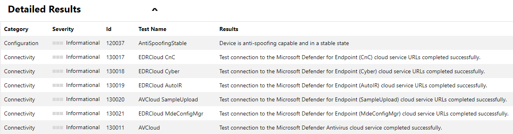
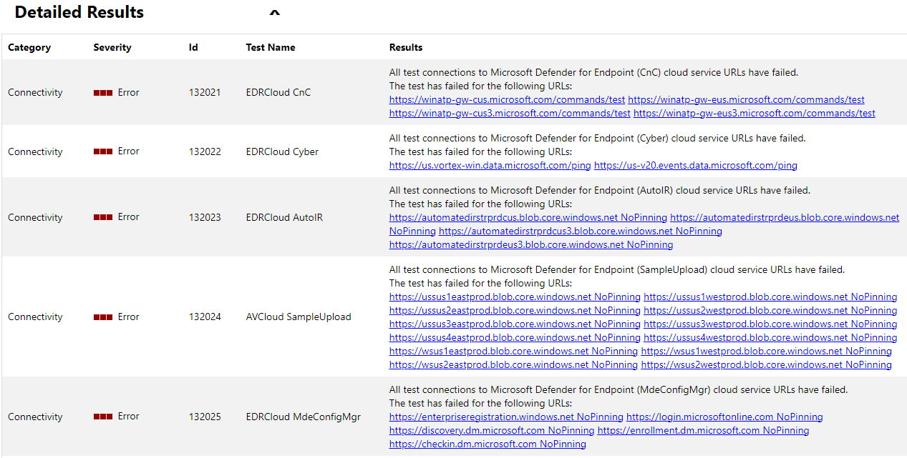
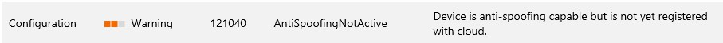
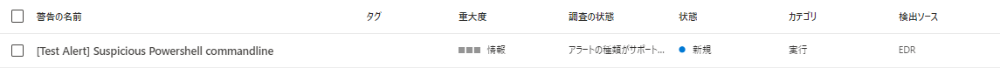
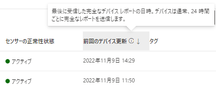
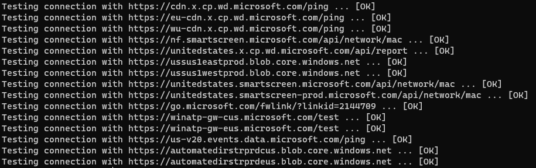
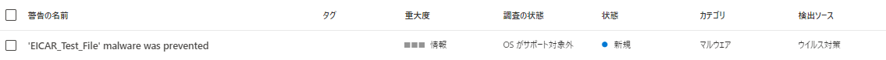
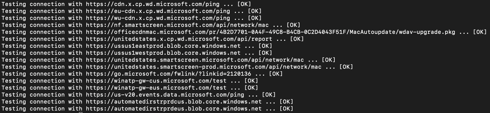

こんにちは Azure Security サポートチームです。
この記事では Microsoft Defender for Endpoint(MDE)にオンボードされたデバイスの正常性を確認するための確認ポイントに関する情報をまとめます。
最新の情報については MDE へのデバイスのオンボードに関する公開情報をご参照ください。
参考情報：デバイスにオンボードして、Microsoft Defender for Endpoint 機能を構成します | Microsoft Learn
本記事の内容
MDE にオンボードされたデバイスの正常性確認ポイント
MDE にデバイスがオンボードされたことを確認するためには、主に以下のポイントを確認する必要があります。
- オンボード手順を実施した最小要件を満たすデバイスにて、必要なプロセスやサービスが稼働しており、オンボード情報が登録されていることを確認します。
- デバイスで通信テストを実施し、MDEへの接続が可能な構成であることを確認します。
- デバイスにて検出テストを実行し、MDEのアラートが発生することを確認します。
- オンボード作業の完了後より最大で 24 時間程度お待ちいただき、Microsoft 365 Defender ポータルにてデバイスレポートの転送が完了したことを確認します。
以下に、各プラットフォーム別の確認方法をご案内します。
Windows 環境の場合
※ 本記事の手順は Windows 10 22H2 で動作確認を実施しています。
STEP1 オンボードする Windows デバイスの要件を確認する
確認の前に、デバイスがMicrosoft Defender for Endpoint の最小要件にてご案内しております要件を満たす構成であることを必ず確認します。
また、Windows Server 2016 / 2012 R2 をオンボードする場合には、Windows Server 2016 と 2012 R2 の前提条件の要件も併せて確認します。
※ MDE がサポートする OS のバージョンは、OS のライフサイクルに依存します。
※ Microsoft Defender ウイルス対策(MDAV) のマルウェア対策プラットフォームは、最新から 2 世代以内のバージョンに更新する必要があります。
※ MDE にオンボードしたデバイスから作成した OS イメージを基に展開・複製したマシンを使用する場合、事前に MDE にオンボードされたデバイスをイメージ化・複製する場合の注意事項 に記載の内容を必ずご確認ください。
STEP2 MDE Client Analyzer ツールを使用して接続テストを実施する
Windows 端末の場合、 MDE Client Analyzer ツールを使用して接続テストを実施することが可能です。
MDE Client Analyzer ツールに関する最新の情報は以下の公開情報を参照してください。
参考情報：Microsoft Defender for Endpoint クライアントアナライザーをダウンロードする | Microsoft Learn
以下のステップで接続テストを実施します。
- MDEClientAnalyzer のダウンロードより、「MDEClientAnalyzer.zip」をダウンロードし、任意のフォルダで展開します。
- 管理者権限でコマンドプロンプトを起動し、[1.] で展開されたフォルダをカレントフォルダに変更します。
- コマンドプロンプトにて以下のコマンドを実行します。(使用許諾への同意を求めるポップアップが表示される場合、同意してコマンドを実行します)
1 | > MDEClientAnalyzer.cmd |
コマンドの実行が完了すると、「MDEClientAnalyzer.htm」が作成され、端末の既定のブラウザアプリケーションで表示されます。
- MDEClientAnalyzer ツールは、以下の5つの接続テストを実施します。※ MDE にデバイスをオンボードするためには、すべての接続テストに成功する必要があります。
1 | ・EDRCloud CnC |
接続テストに成功した場合、以下の例のように[Informational]として接続テストに成功したことが、出力された「MDEClientAnalyzer.htm」の [Detailed Results] 欄に表示されます。

接続テストに失敗した場合は、「MDEClientAnalyzer.htm」の [Detailed Results] 欄にエラーが表示されます。

接続テストに失敗する場合は、 [Results] 列の記載から、接続テストに失敗した URL を確認します。
通信テストに失敗した場合は、以下公開情報の [商用顧客向けの Microsoft Defender for Endpoint の URL リスト] にてご案内しております通信要件を満たす構成であるか否かを確認します。
参考情報：商用顧客向けの Microsoft Defender for Endpoint の URL リスト
また、「MDEClientAnalyzer.htm」の [Detailed Results] 欄に [AntiSpoofingNotActive] の警告が表示される場合、MDE にオンボードされたデバイスをイメージ化・複製する場合の注意事項 にてご案内しております制限事項に該当する環境の可能性があります。

上記の制限事項に該当する場合、デバイスと MDE との接続に問題が発生する可能性があるため、必ずリンク先の情報をご確認ください。
STEP3 Windows デバイスで MDE のアラート検出テストを実施する
STEP2の通信テストにすべて成功することが確認できたら、デバイスで検出されたアラートがMicrosoft 365 Defender ポータル上で検出されることを確認します。
アラートの検出テストは以下の手順で実施します。
- MDE にオンボードした Windows デバイスでコマンドプロンプトを起動します。
- コマンドプロンプトで以下のスクリプトを実行します。(コマンドプロンプトは自動的に終了します)
1 | powershell.exe -NoExit -ExecutionPolicy Bypass -WindowStyle Hidden $ErrorActionPreference= 'silentlycontinue';(New-Object System.Net.WebClient).DownloadFile('http://127.0.0.1/1.exe', 'C:\\test-WDATP-test\\invoice.exe');Start-Process 'C:\\test-WDATP-test\\invoice.exe' |
- 3~10分程度お待ちいただき、Microsoft 365 Defender ポータル上に以下のアラートが登録されることを確認します。

10分以上経過しても新しいアラートが出力されない場合、ポータル上に [状態] 列のステータスが [新規] または [進行中] である既存のアラート [Test Alert] Suspicious Powershell commandlineが存在するか否かを確認します。
もし存在する場合は、既存のアラートのステータスを [解決済み] に変更した上で再度テストを実施します。
参考情報：アラートの状態を変更する | Microsoft Learn
また、念のため[Test Alert] Suspicious Powershell commandlineのアラートを対象とするアラート抑制ルールが構成されていないことも確認します。
参考情報：アラートを抑制する | Microsoft Learn
STEP4 Windows デバイスのレポートデータが転送されることを確認する
STEP3までのすべてのテストを完了したら、デバイスがインターネット経由で MDE と接続可能な状態を維持したまま、レポートデータの転送に成功することを確認します。(レポートデータが完全に転送されるまでに、最大で 24 ~ 48時間程度かかる場合があります)
Microsoft 365 Defender ポータルのデバイスインベントリ画面にて、MDE にオンボードされたデバイスの [前回のデバイス更新] 列の情報から、レポートデータが転送された時刻を確認することが可能です。

STEP3までのすべてのテストを完了し、[前回のデバイス更新] 列の時刻が更新されることを確認することで、デバイスが MDE に正常にオンボードされたものと判断することができます。
Linux 環境の場合
※ 本記事の手順は Red Hat Enterprise Linux 8.2 環境で動作確認を実施しています。
STEP1 オンボードする Linux デバイスの要件を確認する
確認の前に、デバイスがMicrosoft Defender for Endpoint の最小要件にてご案内しております要件を満たす構成であることを必ず確認します。
また、MDE にオンボードするデバイスが Linux デバイスをオンボードする場合のシステム要件を満たす構成であることも併せて確認します。
STEP2 Linux デバイスで接続テストを実施する
Linux デバイスの場合、mdatp connectivity testコマンドを使用して端末がインターネット経由で MDE に接続可能かどうかを確認することが可能です。
デバイスが MDE と接続可能な構成にある場合、以下のスクリーンショットのようにすべての接続テスト結果が [OK] と表示されます。

mdatp connectivity testコマンドによる接続テストの詳細は以下にてご案内しています。
参考情報：Linux で接続テストを実施する | Microsoft Learn
なお、透過プロキシまたは静的プロキシを使用する場合の接続テスト方法については、以下の公開情報にてご案内しています。
参考情報：透過プロキシ、静的プロキシを使用する場合の接続テスト | Microsoft Learn
STEP3 Linux デバイスで MDE のアラート検出テストを実施する
STEP2の通信テストにすべて成功することが確認できたら、デバイスで検出されたアラートがMicrosoft 365 Defender ポータル上で検出されることを確認します。
アラートの検出テストは以下の手順で実施します。
- MDE にオンボードした Linux デバイスでシェルを起動します。
- シェルで以下のコマンドを実行します。
1 | curl -o ~/Downloads/eicar.com.txt https://www.eicar.org/download/eicar.com.txt |
- Eicar テストウイルスが Microsoft Defender によってブロックされたことを確認します。
mdatp threat listコマンドを実行することで、以下の例のように Eicar テストウイルスが検知されたことを確認することができます。
1 | $ mdatp threat list |
- 3~10分程度お待ちいただき、Microsoft 365 Defender ポータル上に以下のアラートが登録されることを確認します。

10分以上経過しても新しいアラートが出力されない場合、ポータル上に [状態] 列のステータスが [新規] または [進行中] である既存のアラート 'EICAR_Test_File' malware was preventedが存在するか否かを確認します。
もし存在する場合は、既存のアラートのステータスを [解決済み] に変更した上で再度テストを実施します。
参考情報：アラートの状態を変更する | Microsoft Learn
また、念のため'EICAR_Test_File' malware was preventedのアラートを対象とするアラート抑制ルールが構成されていないことも確認します。
参考情報：アラートを抑制する | Microsoft Learn
STEP4 Linux デバイスのレポートデータが転送されることを確認する
STEP3までのすべてのテストを完了したら、デバイスがインターネット経由で MDE と接続可能な状態を維持したまま、レポートデータの転送に成功することを確認します。(レポートデータが完全に転送されるまでに、最大で 24 ~ 48時間程度かかる場合があります)
Microsoft 365 Defender ポータルのデバイスインベントリ画面にて、MDE にオンボードされたデバイスの [前回のデバイス更新] 列の情報から、レポートデータが転送された時刻を確認することが可能です。
STEP3までのすべてのテストを完了し、[前回のデバイス更新] 列の時刻が更新されることを確認することで、デバイスが MDE に正常にオンボードされたものと判断することができます。
macOS 環境の場合
※ 本記事の手順は macOS 13(Ventura) 環境で動作確認を実施しています。
STEP1 オンボードする macOS デバイスの要件を確認する
確認の前に、デバイスがMicrosoft Defender for Endpoint の最小要件にてご案内しております要件を満たす構成であることを必ず確認します。
また、MDE にオンボードするデバイスが macOS デバイスをオンボードする場合の要件を満たす構成であることも併せて確認します。
STEP2 macOS デバイスで接続テストを実施する
macOS デバイスの場合、Linux デバイスと同じくmdatp connectivity testコマンドを使用して端末がインターネット経由で MDE に接続可能かどうかを確認することが可能です。
デバイスが MDE と接続可能な構成にある場合、以下のスクリーンショットのようにすべての接続テスト結果が [OK] と表示されます。

macOS でmdatp connectivity testコマンドを使用して接続テストを実施する方法の詳細については以下の公開情報でご案内しています。
参考情報：macOS で接続テストを実行する | Microsoft Learn
なお、プロキシ構成を使用する場合の接続テスト方法については、以下の公開情報にてご案内しています。
参考情報：プロキシ自動構成 (PAC) または Web プロキシ自動検出プロトコル (WPAD) を使用した環境で接続テストを実施する | Microsoft Learn
STEP3 macOS デバイスで MDE のアラート検出テストを実施する
STEP2の通信テストにすべて成功することが確認できたら、デバイスで検出されたアラートがMicrosoft 365 Defender ポータル上で検出されることを確認します。
アラートの検出テストは以下の手順で実施します。
- MDE にオンボードした macOS デバイスでターミナルを起動します。
- ターミナルで以下のコマンドを実行します。
1 | curl -o ~/Downloads/eicar.com.txt https://www.eicar.org/download/eicar.com.txt |
- Eicar テストウイルスが Microsoft Defender によってブロックされたことを確認します。
mdatp threat listコマンドを実行することで、以下の例のように Eicar テストウイルスが検知されたことを確認することができます。
1 | % mdatp threat list |
- 3~10分程度お待ちいただき、Microsoft 365 Defender ポータル上に以下のアラートが登録されることを確認します。
10分以上経過しても新しいアラートが出力されない場合、ポータル上に [状態] 列のステータスが [新規] または [進行中] である既存のアラート 'EICAR_Test_File' malware was preventedが存在するか否かを確認します。
もし存在する場合は、既存のアラートのステータスを [解決済み] に変更した上で再度テストを実施します。
参考情報：アラートの状態を変更する | Microsoft Learn
また、念のため'EICAR_Test_File' malware was preventedのアラートを対象とするアラート抑制ルールが構成されていないことも確認します。
参考情報：アラートを抑制する | Microsoft Learn
STEP4 macOS デバイスのレポートデータが転送されることを確認する
STEP3までのすべてのテストを完了したら、デバイスがインターネット経由で MDE と接続可能な状態を維持したまま、レポートデータの転送に成功することを確認します。(レポートデータが完全に転送されるまでに、最大で 24 ~ 48時間程度かかる場合があります)
Microsoft 365 Defender ポータルのデバイスインベントリ画面にて、MDE にオンボードされたデバイスの [前回のデバイス更新] 列の情報から、レポートデータが転送された時刻を確認することが可能です。
STEP3までのすべてのテストを完了し、[前回のデバイス更新] 列の時刻が更新されることを確認することで、デバイスが MDE に正常にオンボードされたものと判断することができます。
まとめ
この記事では、Windows、Linux、macOS のデバイスを MDE にオンボードいただいた際に、正常にオンボードされたかどうかを確認いただく場合の手順についてご紹介しました。
なお、本記事の内容は執筆時点の情報を基にしております。
そのため、各デバイスのオンボードに関する最新の情報については以下の公開情報をご確認ください。